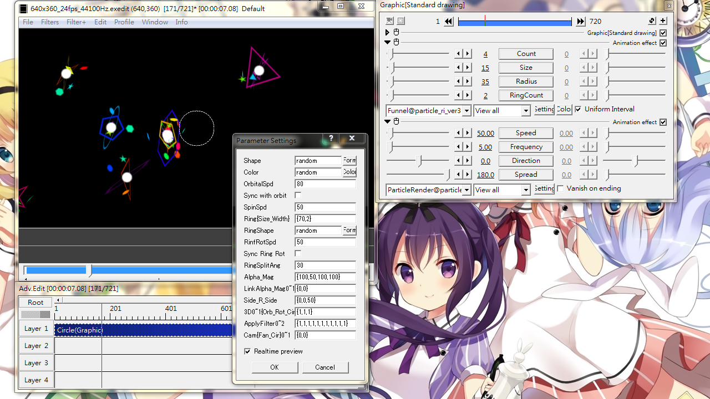

Fig16: Funnel. Looks like the Bohr atom model, or planetary model... whatever.
Funnel
Let something to orbit around a shape.
Sliders
Count
Number of orbiting objects (i.e. "funnels")
Size
Size of funnels
Radius
Orbital radius
RingCount
Number of rings around the particle.
Check box
Uniform Interval: when checked, funnels are arranged in orbit with equal separation.
Setting dialog
Shape
Shape of funnel:
(Leave empty): use the particle's shape as funnel
random: randomly selects from basic shapes
User defined shapes: {shape1,shape2,...,shapeN}
Text: *YourText
External text, image or video: path#, replace # with a PathID.
Basic shape with tweaks: &#,r&{list_of_shapes}
# is the size of funnel (a number).
list_of_shapes is like Circle,Square,Triangle. Funnel shape will be chosen from the list.
Text with tweaks: &font,decoration(0~4),color2,r&*YourText
font: a font face name, like Lucida Sans Unicode
decoration(0~4): add border or shadow
color2: a hex color code like 0xffaa33 for border/shadow
Color
Color setting for ring and funnel.
random: randomize all color.
{color1,color2,...,colorN}: select a color from the list in order. Each color is a hex code.Add a minus sign before a hex code(or random) to reserve that color for the ring only.
OrbitalSpd
Angular speed of funnels.
Format: {lower limit,upper limit,option}
When option=1, there is 50% chance that the sign of angular speed will be reversed.
Sync with orbit
A funnel should stay in a fixed position relative to the particle, like a geosynchronous satellite orbiting around Earth. Need to set OrbitalSpd to 0 for perfect match.
SpinSpd
Speed of funnel's self-spin around the z-axis.
Format: {lower limit,upper limit,option}
When option=1, there is 50% chance that the sign of speed will be reversed.
Ring{Size_Width}
Sets ring size and ring thickness.
Format: {size,thickness}
When only a single value is given, the value will be ring size and 2% of that value will be the thickness.
RingShape
Built-in basic shapes only.
random, or a list like {Circle,Square,Pentagon} which utilize the shapes one-by-one
Use &r&{Circle,Square,Pentagon} to select randomly from the list.
RingRotSpd
Spinning speed of the ring(s)
Format: {lower limit,upper limit,option}
When option=1, 50% chance to reverse the sign of value.
Sync Ring Rot
Similar to Sync with orbit, but applies to ring.
RingSplitAng
The angle difference between multiple rings.
Alpha_Mag
Transparency and magnification for funnel and ring.